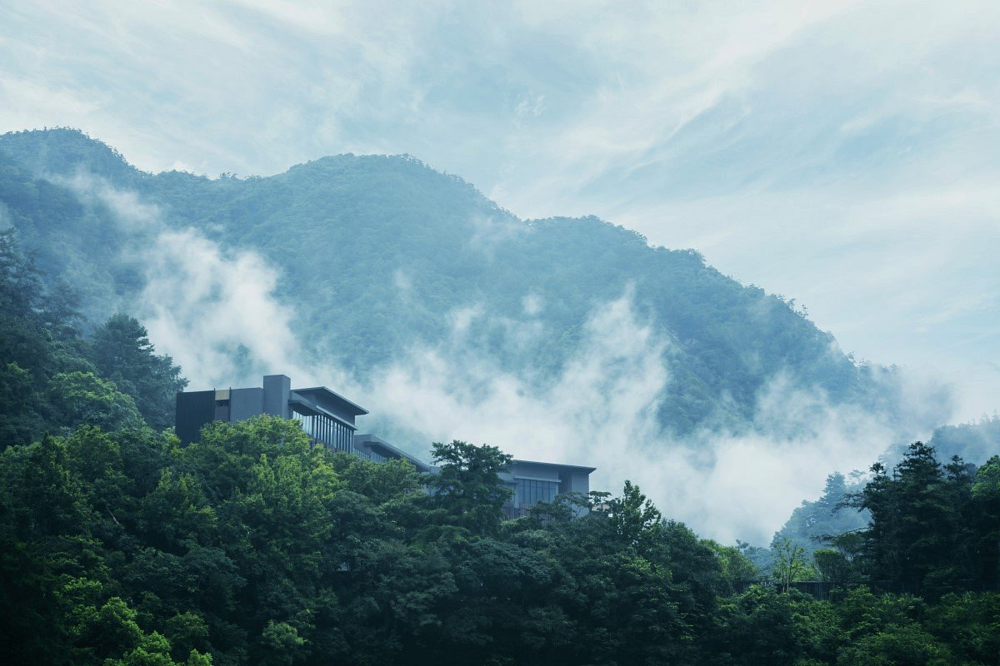
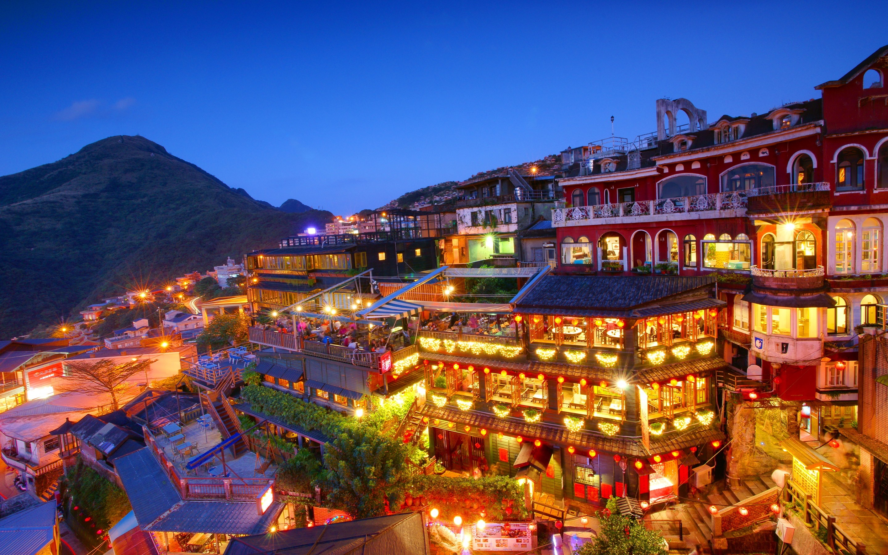

Les gorges de Taroko
Temps de visite : 2 jours
Long de 19 kilomètres, ce canyon époustouflant fait partie des incontournables à ne pas manquer.
Le guide du voyageur
Envie de voyager à Taïwan ? Voici quelques bons plans et adresses dans ce pays entre la Chine et le Japon. A la fois mystique et secrète, l'île m'a emerveillé par ses montagnes, ses villages authentiques, ses étendues sauvages parmis ses villes modernes...
"Les infos pratiques"
| Localisation : | En Asie, entre la Chine et le Japon (trés proches des Philippines et d'Hong Kong) |
|---|---|
| Superficie : | 36 193 km2 (environ 4 fois la Corse) |
| Quand partir à Taïwan ? | Evitez l'été trés chaud et pluvieux ainsi que la saison des typhons qui peuvent être violents. |
| Combien de temps pour visiter à Taïwan ? | En 8 à 10 jours vous aurez un aperçu, pour en faire le tour et profiter, comptez au moins 15 jours. |
| Comment aller à Taïwan ? | Vols direct de Paris-Taipei 3x par semaine avec Air France à partir de 550€ (13h de vol). |
| Comment circuler à Taïwan ? | Plusieurs choix possibles :
|
Quelques adresses pour votre séjour à Taïwan :

Howard hôtel ★★★★★
A partir de 99€/nuit
Réputé pour sa décoration et sa proximité avec les principaux restaurants et activités, l'Howard hôtel sera le cocon parfait pour votre séjour.

NYS loft hôtel ★★★
A partir de 27€/nuit
Ce petit hôtel saura vous séduire avec son emplacement en centre-ville, proche de tous les monuments et boutiques importantes.

W taipei hôtel ★★★★★
A partir de 230€/nuit
Mélange idéal entre rapport qualité/prix et confort, Le W Taipei est considéré comme l'hôtel préféré des visiteurs de Xinyi District .

Hoshinoya Guguan ★★★★
A partir de 499€/nuit
Un batiment minimaliste au coeur d'une forêt de bambous, directement alimentés par les sources chaudes des sommets.
Le coup de coeur ❤
Hoshinoya Guguan



🍜 3 adresses succulentes 🍜

Red lantern
Adresse : 260, Taïwan, Yilan County, Yilan City, Section 2, Minquan Rd, 36號6樓
Prix : €€€
Restaurant chinois haut de gamme. Vous y trouverez le meilleur canard rôti aux cerises de tout Taïwan, les plats sont créatifs et les produits locaux. Le canard vous y est servis de 5 maniéres différentes.

Din Tai Fung
Adresse : 110, Taïwan, Taipei City, Xinyi District, City Hall Rd, 45號B1
Prix : €€
Petit restaurant typique situé au coeur de Taipei! Adresse frequentée par les locaux. célèbre pour son Xiao Long Bao au porc. victime de son succés, l'attente se compte parfois en heures.

Soyan café
Adresse : New Taipei City, Section 5, Xinwu Rd, Wulai District,Taïwan 233 No. 176號
Prix : €€€€
Un restaurant luxueux, au bord d'une riviére paisible de Taipei. Les produits sont frais et la carte mélange la gastronomie asiatique et européenne.
🏞 Les lieux incontournables de Taïwan 🏞


Le village de Jiufen
Temps de visite : 2 jours
Un magnifique petit village Taïwanais, au coeur des montagnes de Ruifang.
Temps de visite : 2 jours
Un magnifique petit village Taïwanais, au coeur des montagnes de Ruifang.

Les montagnes de thé de Chiayi
Temps de visite : 12 heures
Au sommet de la montagne Alishan, vous tomberez sur cette merveilleuse plantation de thé.
Temps de visite : 12 heures
Au sommet de la montagne Alishan, vous tomberez sur cette merveilleuse plantation de thé.

Le Pont du Dragon de Sanxiantai
Temps de visite : 3 heures
AU sud est de Taitung. Il doit son nom aux 8 arches rappelant le nom d'un Dragon.
Temps de visite : 3 heures
AU sud est de Taitung. Il doit son nom aux 8 arches rappelant le nom d'un Dragon.

L'Archipel de Penghu
Temps de visite : Indeterminé
Avec ses 90 îles, l'archipel de Penghu s'étend sur une longueur totale de 60km.
Temps de visite : Indeterminé
Avec ses 90 îles, l'archipel de Penghu s'étend sur une longueur totale de 60km.

Geopark de Yehliu
Temps de visite : 6 heures
Situé au Nouveau Taipei, cette réserve naturelle fait parti des incontournables de Taïwan.
Temps de visite : 6 heures
Situé au Nouveau Taipei, cette réserve naturelle fait parti des incontournables de Taïwan.
La ville de Kaohsiung
Temps de visite : indeterminé
2ème plus grande ville du Pays, elle est incontournable pour toutes ses activités et lieux à visiter.
Temps de visite : indeterminé
2ème plus grande ville du Pays, elle est incontournable pour toutes ses activités et lieux à visiter.

La falaise de Qingshui
Temps de visite : 12 heures
La falaise est si spectaculaire que le gouvernement taïwanais la considére comme la 8éme merveille du monde.
Temps de visite : 12 heures
La falaise est si spectaculaire que le gouvernement taïwanais la considére comme la 8éme merveille du monde.

Les marchés de nuit de Taïwan
Temps de visite : indeterminé
Il existe un grand nombre de marché de nuit dans toutes les villes du pays, à faire absolument.
Temps de visite : indeterminé
Il existe un grand nombre de marché de nuit dans toutes les villes du pays, à faire absolument.